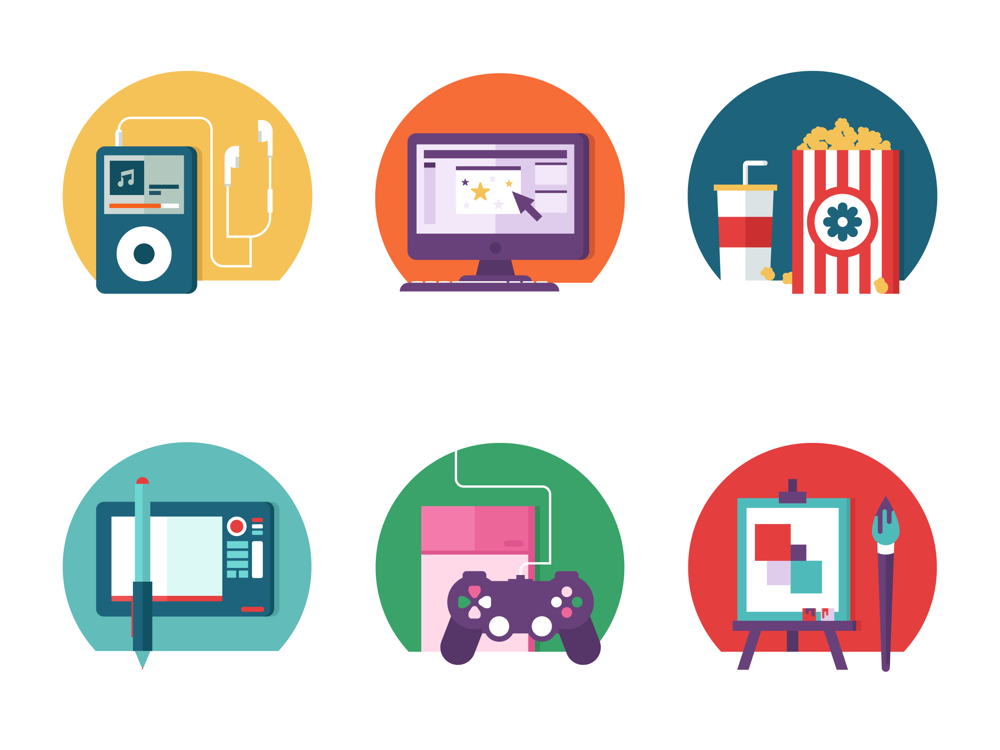

About My Hobbies and Thoughts!
Here are just some of the things I have a strong interest. Music being number one. I love everything about it, from listening to the lyrics, to hearing the different insruments used. Making my own instrumentals will be my next goal. Gaming. It has been a childhood past time, turned hobby, turned pursing career. Just interacting with different softwares used to create games has been something to get lost in. Which brings me to digital art. I didn't realize how frustatingly fun it would be to fail at doing something I've done the traditional way. Digital Scuplting is someting I'm seeking to master. Creating something I've drawn, essentially bringing it to life in a way, gives me joy.
